Overview
To unlock the next level of sales, Wayground had to transition from an individual teacher product to a robust enterprise solution for large schools and districts. This meant building admin controls, scalable reporting, and features that satisfied district procurement requirements - all while keeping teachers at the center of the product.
This case study covers two critical projects that defined our enterprise strategy:
- Content Moderation - Fighting to preserve product value while satisfying political concerns in conservative states
- Usage Analytics - Scaling customer success from manual reports to self-service dashboards
What went into that? Mostly a lot of meetings, strategic fights, and thoughtful design.
Content Moderation Tool
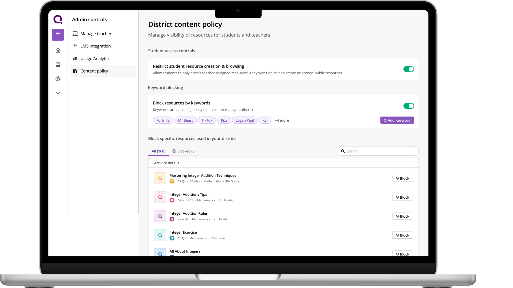
The Political Context
We had this global content library - thousands of quizzes and resources that teachers could access. Great for product value.
But then Republican states started passing 'Parents Bill of Rights' laws. Any edtech platform with content mentioning LGBT, critical race theory, certain historical topics - getting blocked at the district firewall level.
We're losing deals. Sales is panicking. They come to product and say: 'Just let admins turn off the global library entirely. Problem solved.'
And I'm sitting there thinking... that's the worst possible solution.
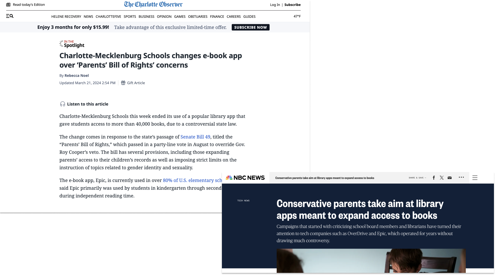
The Dilemma
Option A (what Sales wanted): Global toggle - admins turn off entire library.
- ✅ Solves the political problem
- ❌ Destroys product value
- ❌ Teachers lose access to 90% useful content because 10% is 'controversial'
- ❌ We look bad - 'the edtech platform that removed all its content'
Option B (do nothing):
- ❌ Keep losing deals in red states
- ❌ Sales continues to panic
- ❌ Problem doesn't go away
Neither option was acceptable to me.
The Fight
So I pushed back hard on Sales. I'm in meetings saying:
'If we just give admins a kill switch, we're putting teachers under the bus. They lose their best resources. We're destroying the product to save a sale. And we don't even know if they'll buy after we build this.'
Sales is pissed at me. They're like, 'The customer is always right, just build what they want.'
PM is caught in the middle. Eng is waiting for us to figure it out.
This is where it got messy. I had to decide: Do I die on this hill?
Reframing the Problem
So I worked with the PM to reframe the problem. Instead of:
'Should we kill the library?'
We asked:
'How do we give admins control without destroying teacher value?'
The Solution: Granular Content Moderation
We landed on a granular content moderation tool where admins could:
- Filter by keyword (LGBT, race, religion, politics, etc)
- Preview flagged content before hiding it
- Set district-wide policies
- Teachers could still request access with justification
This way:
- ✅ Admins feel in control (political cover)
- ✅ Teachers aren't blindsided (they can see what's hidden and why)
- ✅ We preserve 90% of the library value
- ✅ We show sophistication, not cowardice
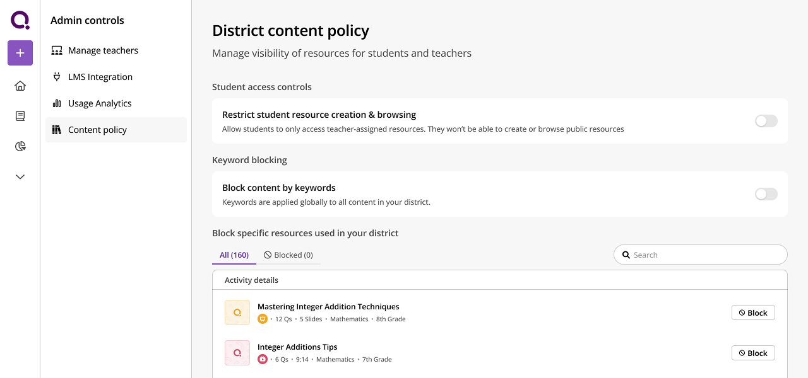
In this blank state we kept information hierarchy as action on students → all content → specific content. Note that in the block specific resources section we just show that a resource was used, not who used it and where, which was what the admins wanted. That's because we didn't want teachers to feel pressured or put under a microscope, and we wanted the focus of the admin to be on content at all times, as we were a teacher led tool and didn't want teachers to stop using it just because this was in play.
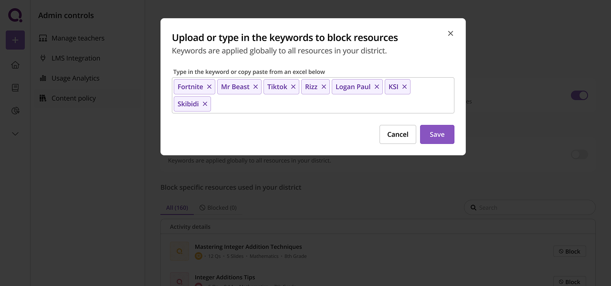
Admins would have to flip a toggle to enable keyword blocking. We wanted it to feel like a weighty action that had consequences. The ideal UX here was to upload a CSV, obviously. But when we spoke to admins, they said they had 1000+ keywords they would just put in. This would degrade our search and recommendations since they would have to take that into account now. So we let admins copy-paste from an excel or enter manually instead. We didn't want them doing too many keywords also. The second debate was around semantic matching vs exact matching. For example, do we ban resources containing "fortnight" as well as "fortnite"? It is possible to end up in a situation where for example you ban resources on finance "equities" because you banned "equity" - as in DEI. So in order to avoid such errors we did exact match only.
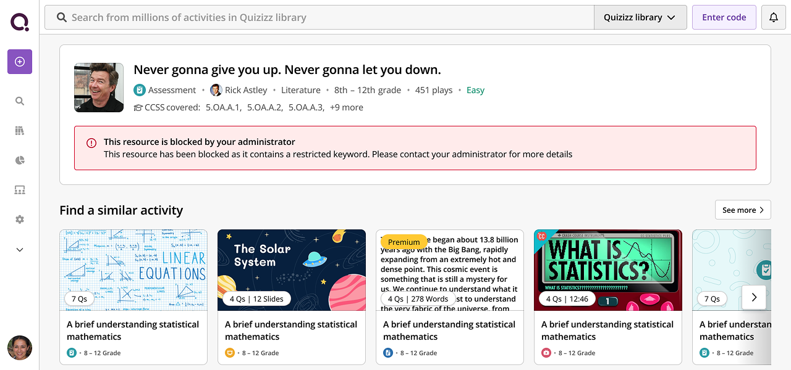
This is the activity details page. When teachers would land on a blocked page, we encouraged them to contact the administrator. But we couldn't show what exact keyword was blocked, since users might work around it and use a synonym or spell it differently. So we had to think a bit adversarially here.
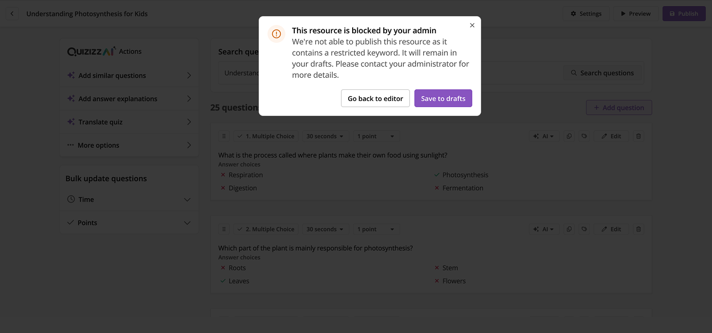
Some of the many edge cases we had to deal with. Since Wayground is a content creation product, we couldn't affect the content publishing UX. We had to figure out what way to incorporate content moderation when a user published a resource on the platform. We had the idea to save it in drafts instead of deleting it. That way teachers could still maintain access without it being viewed by students.
Internal Pitch & Building It
But here's the thing - this was way harder to build than the kill switch. More eng effort, more edge cases, more QA.
So I had to pitch it internally:
'Yes, this takes 6 weeks instead of 2. But if we just give them a kill switch, they might not buy anyway. And if they do buy, we've built a shitty product. This solution actually solves their problem AND keeps our product good.'
We had to navigate through intense political context and sales pushback. The hard conversations with stakeholders were about balancing district needs with teacher experience, and investing engineering effort wisely. We gathered feedback internally, iterated on the approach, and figured out how to build something that satisfied everyone - or at least didn't piss everyone off.
Impact & Key Learnings
We shipped it. Sales used it to close 3 deals in red states worth roughly 250k USD. Admins loved the control. Teachers didn't revolt because they could still request access (which was what we were really scared of).
3
Deals closed in red states
15%
District adoption rate
90%
Library value preserved
But honestly, the metrics weren't amazing - only 15% of districts actually used it. Most admins didn't care about the controversy, they just wanted good content.
What I learned: Sometimes you build features for 15% of customers because those 15% are strategic. And sometimes the fight isn't about the feature - it's about not destroying your product to solve a sales problem.
While content moderation unlocked sales in politically sensitive markets, we had another scalability problem: our customer success team was drowning in manual reporting requests. Enterprise customers needed usage data to justify renewals, but our CS team couldn't keep up with the volume of ad-hoc data requests. The solution would require a completely different kind of design thinking - moving from fighting stakeholders to enabling them.
Usage Analytics Dashboard
Led end-to-end process from user research to interactive prototyping. Unblocked engineering by creating code prototypes, designed reusable charting components as part of design system.

Problem Statement
Wayground customer success team was burnt out. From 2022, we had pivoted from targeting individual teachers to selling as a package to schools and districts. Customer success team did a lot of tedious, manual work to pull and prepare reports and analytics of usage/adoption for the large school and district customers. These were sent via email.
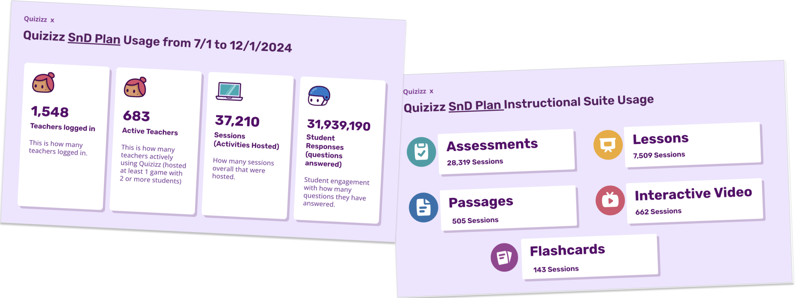
This model was no longer scalable. Each CS rep had a few dozen schools and districts they were managing. Dealing with ad hoc requests meant they were overloaded and had a slow turn around time.
Our largest customers were threatening not to renew. They were unhappy with the turn around time to get the data and there were data pipeline/reliability issues meaning that they could get inconsistent data month on month.
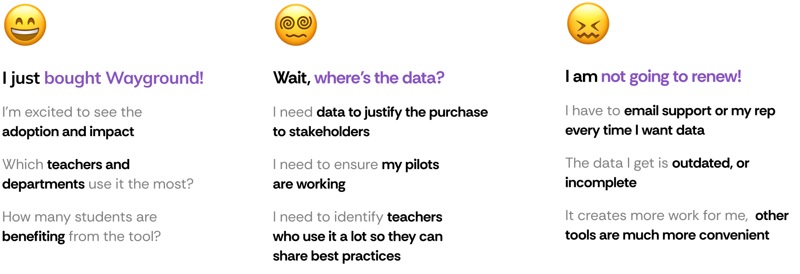
Discovery & Research
CS was overloaded and came to us. PM, CS and Designer (me) sat together to aggregate the feedback from different customer conversations and start discovery.
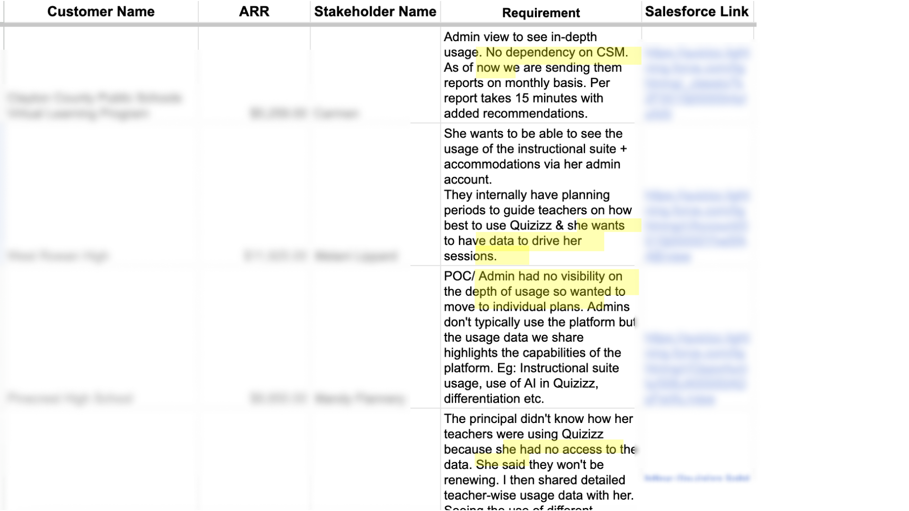
Personas from user calls
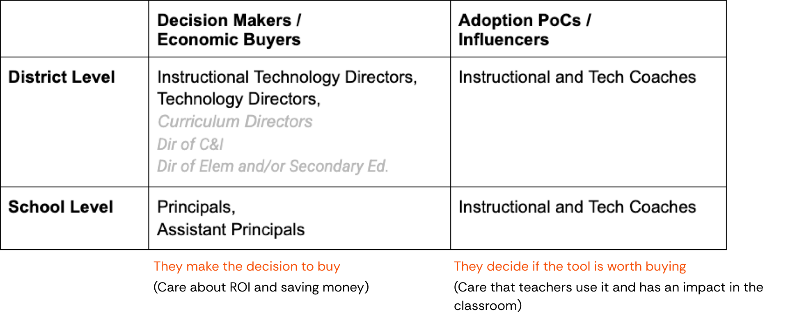
Key user scenarios
Renewal
"I see 40% of teachers at pilot school actively using Wayground in the trial period. Comparing against similar rollouts, this indicates good adoption. I approve renewing it for the entire school year."
Adoption
"I want to understand if using Wayground is having any impact or not. Hmm, teachers are using it, that is a good sign. Although not used by many departments, it's good that it's useful for Maths and English…"
Comparing tools
"I see Wayground has a video format like [competitor]. Although only 500 teachers use it while 2000 teachers use [competitor]. Maybe I can try to increase Wayground adoption and if it works well we can stop paying for [competitor]."
HMW & UX Principles
Conducted a workshop with CS, Data Team and Product to scope out the most needed features, and reviewed competitors.
For Admins
HMW create an analytics experience that doesn't just display data but actively helps administrators make better decisions about implementation, training, and renewal.
For CSMs
HMW help CSMs focus more on relationship building than data prep. Hit the streets, not the spreadsheets.
UX Principles
- When choosing a metric/chart, does this help the admin make better decisions around Wayground adoption? If not, don't show it.
- Does showing this help the CSM make better decisions for their school or district? If not, don't show it.
- BLUF - Bottom Line Up Front where possible. Show summaries or key info to unblock users.
- There are a lot of charts and data points to show. Admins are busy people - ensure we don't overwhelm with too much cognitive load.
Information Architecture
We asked admins to walk us through how they read and interpreted dashboards in other tools. We saw a trend of a natural cognitive progression that matches how administrators would likely process and analyze the data.
We had to support both quick glances and deep dives as necessary. We created a taxonomy of data points and mapped it to frequency and time spent:
Level 1 - Key Metrics
Viewed frequently for a few mins at a timeHow many teachers are hosting an activity? How many activities hosted?
Level 2 - Trend metrics
Viewed frequently for a few mins at a timeHow many teachers hosted month on month? What resource types were used?
Level 3 - Distribution analysis
Viewed infrequently for several mins at a timeWhat kind of resource types and accommodations are used? What is the usage of AI features?
Level 4 - Comparative analysis
Viewed rarely for hours at a timeHow are different schools doing? What are top performing teachers and schools?
Code Prototyping to Unblock Engineering
Problem: Data team wasn't aligned on the data model. We made low fidelity sketches, but they still had a lot of questions on where each data point is coming from, what is the interactivity, time period etc. How are filtering and selection going to work? How do we deal with edge cases?
Solution: Before going into high fidelity, I went into Cursor and vibe coded a prototype with interactivity, imported some of our design system components and then sat with the data team and gave that as the source of truth so they were unblocked and could start creating the data model and pipelines.

Screenshot of vibe coded prototype
Charting Components for Design System
Problem: We didn't have charting in our design system and front end didn't want to build it. They wanted to use a third party library (Streamlit) which couldn't be customized to our design language - this would be a bad user experience.
Solution: I went through the codebase and found other examples where charting was used inside our product. I spoke to other devs and designers to understand implementation constraints. We finally chose Chart.js which was an opensource, flexible library that was perfect for our use case.
I sat with front end and engineering manager to discuss and came to an agreement: design system where possible - do not create new colour, typography or spacing primitives for charting.
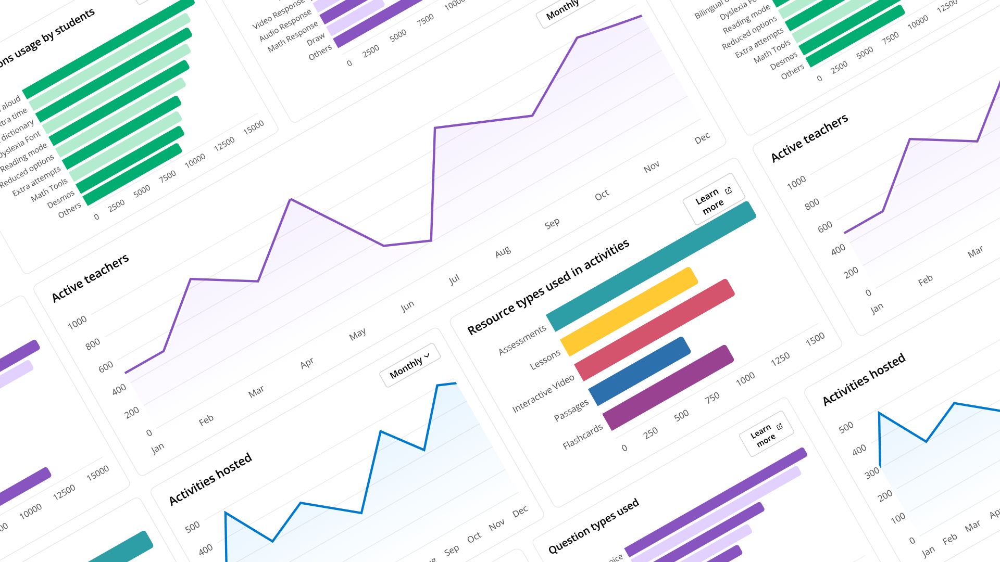
User Testing
Challenge: Admin user persona was busy and unavailable to talk. We got face time with admins of some critical districts by co-ordinating with the CS Team.
We created a simple usability testing plan and questionnaire for each call. I also pulled the data for each district and created a custom mockup to make the test more realistic. We got some good feedback on usage behaviours and nuances that helped us change the final design.
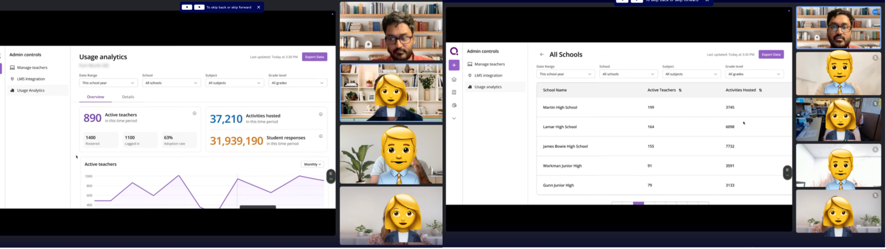
Iteration and Design Details
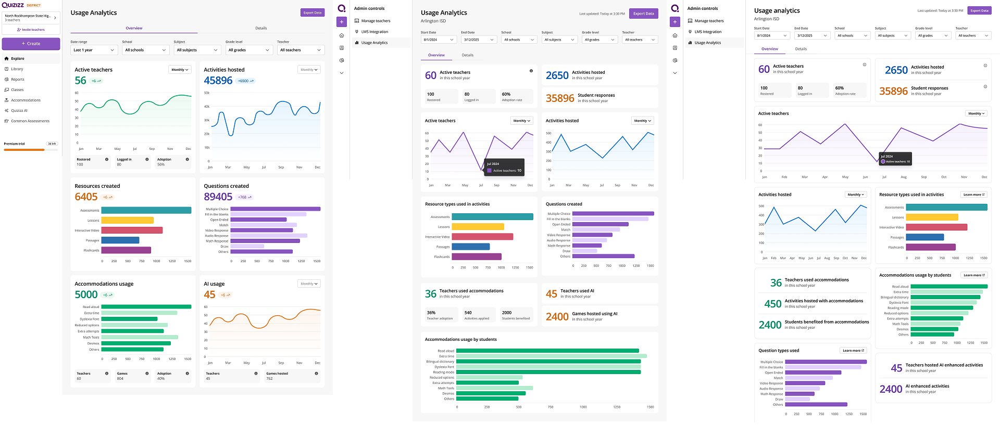
Iteration on UI over time. I kept the overall IA of most important metrics on top, but started moving from contrasting background and card to removing additional visual clutter and overhead. Card structure also changed to be more modular and bento box like, with multiple layouts.
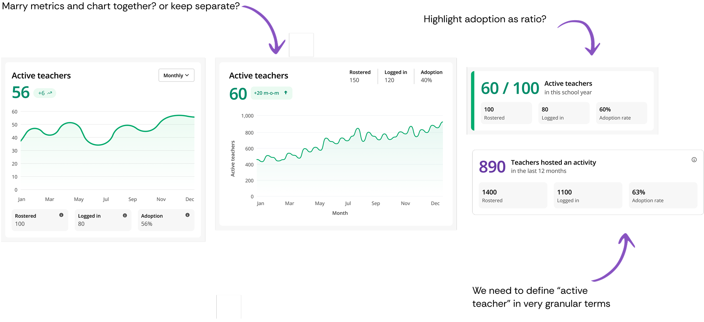
I was thinking a lot about separating key metrics from the chart itself or to keep them together. What would be best for readability? Some metrics themselves and how they were presented or defined could confuse admins more.
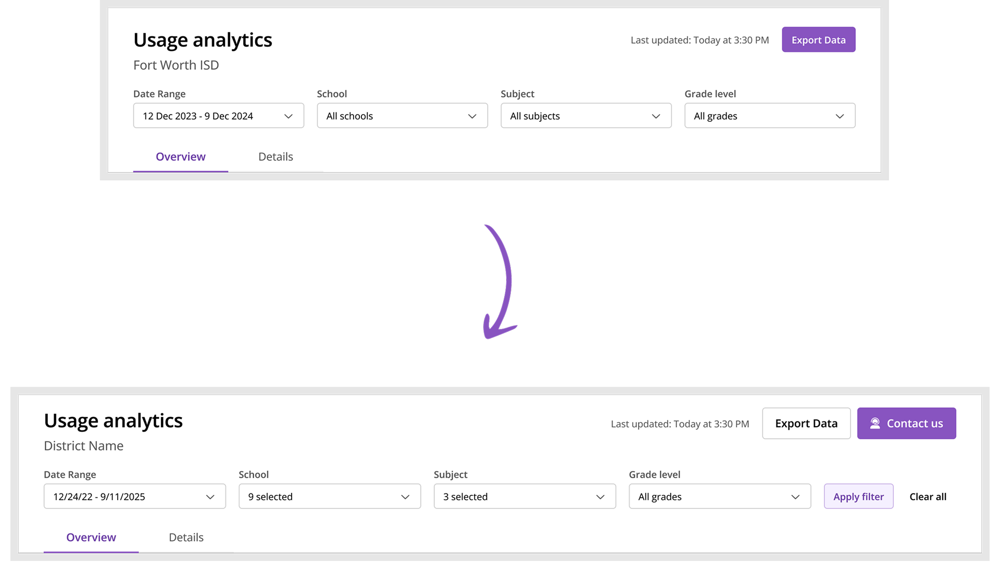
The page header design evolved based on technical constraints. We initially envisioned real-time filter updates where changes would immediately refresh the data. However, our data infrastructure (using Cassandra) made this challenging at scale - districts could have dozens of schools, thousands of teachers, and over 100,000 students. Querying and aggregating this volume of data in real-time was computationally intensive. We pivoted to an "Apply Filters" pattern where admins explicitly trigger data updates, which improved performance significantly. We also added a prominent "Contact Us" CTA that emails the CS team with context about what the admin is viewing - recognizing that admins often need to take action based on the data, and keeping our CS team engaged with their accounts.
Final Design
Simplified the UI and reduced number of colours and data points shown to maximise readability. Added Detail tab to support deep dive user behaviour.
Impact & Reflection
Project currently in development. Received a great reception from CS internally and from customers it was shown to. I am aware of at least one renewal risk who agreed to renew after seeing the figma prototype so that's always a great feeling.
Other designers in team started using Cursor after I demoed my workflow to the team.
What could have been better
More direct admin access earlier
We coordinated through CS to get face time with admins, which limited our testing frequency. If I had pushed harder to establish direct relationships with a few friendly admin contacts early on, we could have run more rapid iteration cycles. The dependency on CS gatekeeping slowed down our validation process.
Technical constraints discovered too late
The Cassandra performance limitations that forced us to pivot from real-time to "Apply Filters" came up during implementation. If I had done a technical feasibility spike with engineering earlier - even just a 30-minute whiteboarding session - we could have designed with those constraints from the start rather than backtracking on interaction patterns.
Metrics definition workshop needed
I noticed confusion around how certain metrics were defined (mentioned in the card design deep dive). In hindsight, we should have run a cross-functional workshop specifically on metric definitions and data quality before designing. We were designing the interface while the data team was still figuring out what some numbers actually meant - classic cart before the horse.
Key learnings
Code prototypes create shared understanding
The "vibe coded" prototype was more effective than static mockups at aligning the data team. When you're designing data-heavy experiences, interactive prototypes that show state changes and edge cases are worth the extra effort. It became the source of truth and unblocked multiple teams.
Design system constraints as guardrails
The agreement with engineering to "use design system primitives, don't create new ones" for charting actually made the design process faster. Constraints forced creative solutions within existing patterns rather than bikeshedding new color palettes. Sometimes limitations are gifts.
Information architecture hierarchy works
The four-level structure (key metrics → trends → distribution → comparison) mapped to actual usage patterns and cognitive load. When IA is grounded in real user mental models rather than feature lists, it tends to hold up better through iteration.
Fighting for CS needs alongside user needs
The "Contact Us" CTA that emails CS with context wasn't just about users - it kept CS engaged and in the loop. In B2B products, your internal teams are stakeholders too. The dashboard succeeded partly because it made CS's lives better, not just admins'.